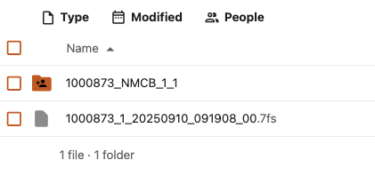

Improve VU-AMS¶
Operational improvements for VU-AMS (ECG / autonomic monitoring) data: quality-check protocol, Research Drive folder layout, and investigation of abnormal export file sizes.
Related: Device setup for visit (install and example trace) · Device data workflow (capture → QC cadence) · Devices — VU-AMS (Research Drive WebDAV mount for processing) · Research Drive path: organized/VU_AMS/
VU-AMS contacts (QC support): Martin m.j.gevonden@vu.nl · Kor cjj.stoof@vu.nl — VU-AMS Core
Task 1: Create quality check protocol¶
Goal: A written QC protocol from raw .7fs data through filtered data in VU-AMS Core, so checks are repeatable across staff.
Checks when opening a recording¶
- Markers — confirm all expected markers are present.
- Date — confirm recording date is correct.
- Version — note software / export version used for the check.
- Signals — review key channels, including:
- MXR (g) — gravity level; can change sharply when position changes (e.g. after a marker is inserted).
Reference trace¶
Compare against a normal ECG appearance (see Device setup for visit — VU-AMS).
To-do¶
- Draft QC protocol document (slides or SOP) covering raw → filtered workflow.
- Contact VU-AMS to review the protocol (one onsite visit took place; formal QC slides were deferred due to capacity).
- Link the approved protocol from Devices or Research Drive
data infrastructure/once published.
Task 2: VU-AMS Research Drive structure¶
Goal: All .7fs files sit at one level under organized/VU_AMS/ so detection scripts can find them. Do not mix participant folders and .7fs files at the same level.
Problem¶
- The VU-AMS area currently has both subfolders and
.7fsfiles at the same level — incorrect for the pipeline. - Some
.7fsfiles are inside participant folders instead of alongside them. - Processing code expects all
.7fsat the same directory level.
Example (incorrect vs correct layout)¶
Input — incorrect: participant folder with .7fs nested inside (scripts may miss the file):

Figure: nested layout — 1000873 folder contains the .7fs file.
Output — correct: all .7fs files directly under organized/VU_AMS/:

Figure: flat layout — .7fs files at the same directory level.
Target layout¶
organized/VU_AMS/
├── {participant_id}_VU_AMS.7fs
├── {participant_id}_VU_AMS.7fs
└── ... (only .7fs and sidecar .amsdatai at this level — no nested .7fs in subfolders)
Participant folders to fix (move .7fs up one level)¶
Move each .7fs out of its subfolder into organized/VU_AMS/:
| Participant folder / ID |
|---|
59418 |
1000873 |
145469 |
1001069 |
420969 |
After restructuring¶
- Re-run file-detection / QC scripts on
organized/VU_AMS/to confirm all.7fsare found. - Inform relevant personnel (data team, research nurses, device operators) of the correct upload layout so new exports are not nested again.
Task 3: Investigate abnormal VU-AMS file sizes¶
Goal: Understand whether small export sizes are expected (visit ended early) or indicate device / export problems.
Context: Normal exports are often on the order of ~200 MB per file (see Recurring routines). The files below are much smaller (roughly 84–136 MB, one at 3 MB) and need review.
For oversized files (~600 MB, crash / not closed) and wrong-date exports (e.g. year 1919 on old firmware), see Devices — VU-AMS abnormal sizes (Martin Gevonden, VU-AMS).
Investigation questions¶
For each file:
- Did the participant finish the visit early (shorter recording)?
- If the visit was complete but the file is still small — device or export issue?
Files to review¶
| File | Size (MB) |
|---|---|
1002021_VU_AMS |
93 |
1000710_VU_AMS |
108 |
1000689_VU_AMS |
109 |
1003901_VU_AMS |
99 |
1003923_VU_AMS |
126 |
1001411_VU_AMS |
94 |
1001728_VU_AMS |
111 |
660360_VU_AMS |
113 |
1000591_VU_AMS |
84 |
1003652_VU_AMS |
112 |
1004125_VU_AMS |
114 |
1001584_VU_AMS |
106 |
0000145_VU_AMS |
110 |
1003675_VU_AMS |
112 |
1003655_VU_AMS |
129 |
1003687_VU_AMS |
136 |
1000984_VU_AMS |
87 |
1003906_VU_AMS |
96 |
1002004_VU_AMS |
104 |
1001849_VU_AMS |
106 |
1000778_VU_AMS |
107 |
505972_VU_AMS |
96 |
1000886_VU_AMS |
3 |
1000974_VU_AMS |
84 |
1000614_VU_AMS |
96 |
115464_VU_AMS |
97 |
1003578_VU_AMS |
87 |
1003862_VU_AMS |
98 |
1001739_VU_AMS |
98 |
1001721_VU_AMS |
105 |
1003593_VU_AMS |
117 |
1001087_VU_AMS |
106 |
755814_VU_AMS |
107 |
1001724_VU_AMS |
110 |
To-do¶
- Cross-check each ID against visit log / Castor (visit completed vs early stop).
- Open suspect files in VU-AMS Core (priority:
1000886_VU_AMSat 3 MB). - Escalate device issues to the study device lead or central IT as appropriate (document contacts in Where data lives).
Handover checklist¶
- Task 1 — QC protocol drafted and shared with VU-AMS
- Task 2 — five folder layouts corrected; team notified
- Task 3 — abnormal-size list reviewed and conclusions documented